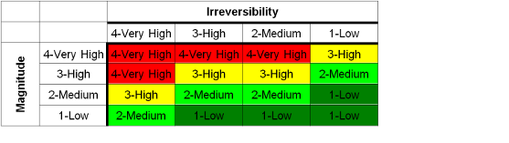
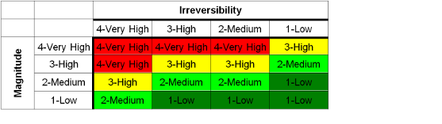

Explanation of How Target-Threat Ratings Are Calculated
The first table shows the rule-based procedure for combining the rankings
for the Scope and Severity variables to get a ranking of
Threat Magnitude.
Under these rules, if a threat is rated 'low' on either variable,
then the magnitude is 'low' overall.
Threat magnitude is then combined with Irreversibility ratings
using the second table
to get the Target-Threat Rating.
 
